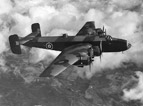
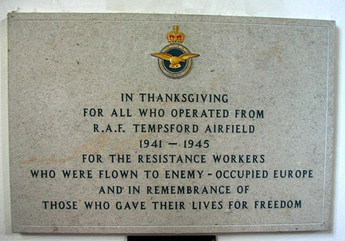
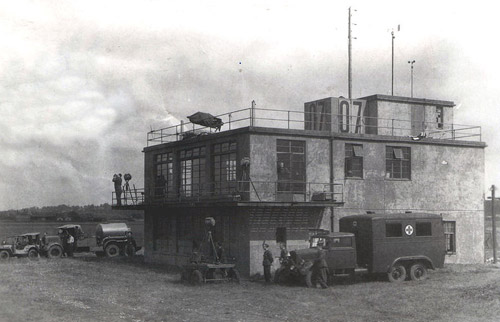

The Special Operations Executive
The Special Operations Executive—SOE, for short—was initiated by Prime Minister Winston Churchill in 1940, after the outbreak of World War II. Churchill told this organization to “set Europe ablaze,” in other words to gather intelligence through espionage, but also to disrupt Germany’s hold on Europe by conducting sabotage. Two secret organizations formed the group: the Secret Intelligence Service—SIS, or MI6—and a department of the War Office known as Military Intelligence Research—MIR.
SOE became known as The Ministry of Ungentlemanly Warfare. Its headquarters were located at 64 Baker Street in London, so they were also referred to as The Baker Street Irregulars. Agents underwent commando training and specialist training in skills such as demolition techniques—Semtex being the plastic explosive of choice. They received instruction in Morse code and radio operations as well as parachute training for those who would be dropped by parachute into enemy zones. The SOE developed a wide range of equipment for their clandestine activities: a miniature folding motorbike, a silenced pistol, foreign clothing, forged identity documents and ration cards, and ingenuous devices such as exploding pens, guns concealed in pipes, exploding rats and land mines concealed in cow dung. They also developed small fighting knives that could be concealed in the heel of a shoe or coat lapel. Since they faced a terrible fate if captured by the Gestapo they were given suicide pills disguised as buttons.
Agents were recruited for missions in France, Germany, Holland, Belgium, Italy, Yugoslavia, Hungary, Greece, Albania, Czechoslovakia, Norway, Poland, Romania and other countries. France, in particular, became well known for the great number of female operatives introduced by SOE. Thirty-nine female agents were sent into the field, of which thirteen did not return. In the Dutch Section, there was only one female agent: Beatrix Terwindt.
Trix, as she was known, was actually a member of MI9—a small intelligence service whose principal directive was to set up escape routes for downed pilots. Trix joined a SOE drop into Holland in order to set up an escape route to Belgium. Originally an air hostess for KLM—a Dutch airline—she seemed an ideal recruit for the MI9 mission. She underwent the regular SOE training—most likely including instructions on the use of exploding rats and lapel blades—and they planned to parachute her into Holland under the code-name Felix. On the evening of February 13, 1943, she was driven to Tempsford Airfield where she was given a supply of Dutch money and identity papers as a hospital nurse. The next day SOE received a message announcing “a welcome to a gallant woman comrade.” Trix had little knowledge of the Dutch section fiasco known as “England Spiel” – a game played with the SOE by the head of the Abwehr, Hermann Giskes. Click here to learn more
In June, 1942, Giskes captured agent Huib Lauwers, with the codename Ebenezer, and using his wireless, convinced SOE headquarters that Lauwers was operating freely in Holland. His deception continued through more captured agents and wireless sets whereby Giskes was able to organize “reception committees” in Holland for parachuting SOE agents, radio operators and stores. A number of agents coerced into radioing London omitted their “security check,”—in Lauwers case, a mistake in every sixteenth letter of his transmission—but Headquarters did not detect the omissions. Over fifty agents despatched by SOE dropped straight into Giskes’ hands, and forty-seven of them were said to be executed. For more information of this deception, I would suggest you read Between Silk and Cyanide—A Codemaker’s War 1941-45 by Leo Marks.
Another book I recommend is Saturday at MI9 by Airey Neave—the man who ran MI9 for three years during World War II, and was killed by an IRA bomb in 1979. This book is currently out of date, but can be obtained through libraries, or the ever-useful Amazon marketplace. http://www.amazon.com/Saturday-at-M-I-9-Airey-Neave/dp/0340025972 Trix’s experiences are recounted by Neave.
On landing, she said, the wind caught her parachute, and she slightly injured her face. She was initially greeted by Dutchmen, who seemed a “rough bunch of men”, but nothing alerted her to the fact that they were collaborators. Unfortunately they tricked her into giving them the address of her contact at the Hague. After this she was shackled and taunted; she attempted to put a poison pill in her mouth, but her captors prevented her. Eventually they transported her to Abwehr Headquarters in Dreibergen where she was interrogated for three or four days with only one interruption for sleep. Trix refused to cooperate with the Nazis. Later she was moved to a prison at Haaren where the SD—Sicherheitsdienst, the intelligence branch of the SS—continued her questioning. Trix was aghast at the detailed knowledge the SD possessed of the training school for agents, names of people within the SOE, and meeting-places. Since she knew very little about the SOE itself, they could obtain no more information from her. She remained at Haaren prison until May 7th, 1944. Then she was transported to Ravensbruck concentration camp where she suffered appallingly.
There is no mention in Saturday at MI9 of what Trix went through, but we can imagine from descriptions of Ravensbruck. It was a concentration camp for women where they lived in subhuman conditions and thousands were shot, strangled, gassed, buried alive, or worked to death. In January 1945, Trix was transferred to Mauthausen, a slave labour camp, and a week before the end of the war reached Switzerland through the International Red Cross. Airey Neave described Trix as “surely one of the bravest of many brave women agents of her generation.”
Tempsford Airfield

Tempsford Airfield was the main airfield where SOE agents were debriefed and flown over to Europe to embark on their missions. RAF pilots employed Halifax bombers, Hudsons, and Lysanders, also called Lizzies.
The bombers were large cumbersome aircraft with machine gun turrets. Agents were dropped by parachute into Europe using a hatch behind the bomb bay. Lysanders were tiny planes that were used primarily to drop or pick up an agent in a field on the continent, where they could land undetected. Hudsons were used for the same purpose. The buildings of Gibraltar Farm, on the eastern perimeter of the airfield, were converted into high security SOE stores and the farmhouse into an agent reception and pre-flight preparation centre. Numerous well-known agents, including Violet Szabo, embarked on their missions from Tempsford. Airey Neave also mentions accompanying Trix Terwindt to this location. Local residents were aware of the airfield, but had little knowledge of the clandestine activities that took place there. http://www.colindaylinks.com/BedfordLocal/Tempsford2.html
